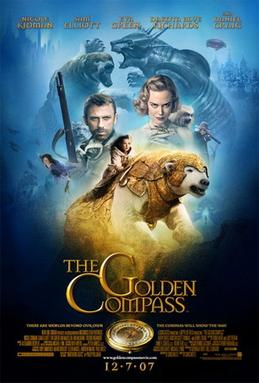

Hi,I'm Venkataramana.I am ambitious and driven. I thrive on challenge and constantly set goals for myself, so I have something to strive toward. I'm not comfortable with settling, and I'm always looking for an opportunity to do better and achieve greatness.
The Golden Compass" is a hazier, more profound dream epic than the "Rings" set of three, "The Narratives of Narnia" or the "Potter" films. It springs from a similar English universe of semi philosophical enchantment, yet makes more mind boggling miscreants and suggests really captivating conversation starters. As a visual encounter, it is great.
The rundown of urban areas that I recomed to visit
| Name of the city | Places to visit | Time to spend |
|---|---|---|
| Agra | Taj Mahal | 5 Hours |
| Jaipur | Hawa Mahal | 4 Hours |
| Varanasi | Dashashwamedh Ghat | 8 Hours |
| Ladakh | Nubra Valley | 4 Hours |
How to send the emoji parallel with live chat using core php?
query( 'SELECT testimonial, author FROM recommendations WHERE 1 ORDER by rand() LIMIT 1' );
foreach ( $results as $row ) {
echo '' . $row['testimonial'] . '
';
echo '';
}
// Close the connection
$db_connection = null;